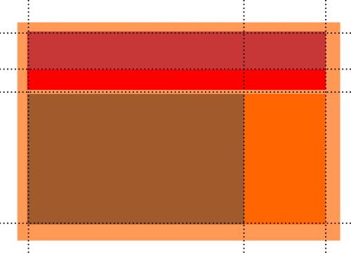

En estos videos descubriremos algunas posibilidades y características que nos ofrece el modelo de diseño Grid para nuestros futuros proyectos de diseño web.
Video explicativo acerca del modelo CSS grid.

Ejemplo de mockup para el diseño de una landing
page sencilla